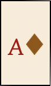
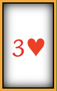

*A card is safe to move if its duplicate isn't in the river or on the docks.
|  | All base cards are tinted a light brown. |
|  | Cards in the river or on the docks with a gold border have a duplicate in the river. |
| In autoplay mode, cards with a purple border can be played onto the foundations, but weren't played automatically because there might be a better move. |